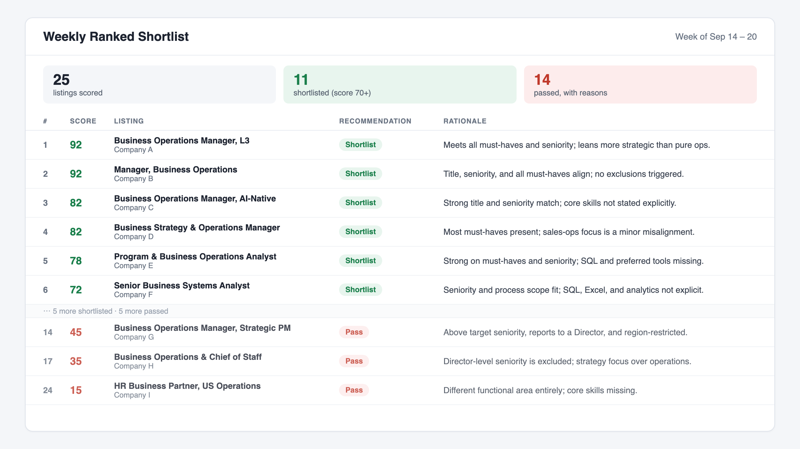
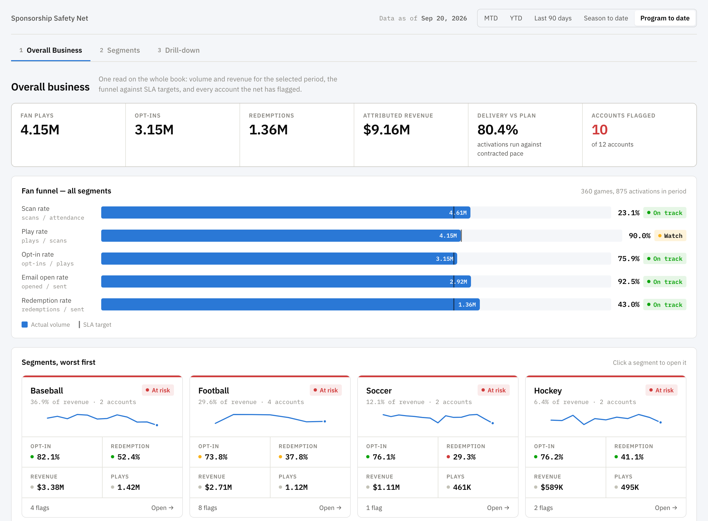
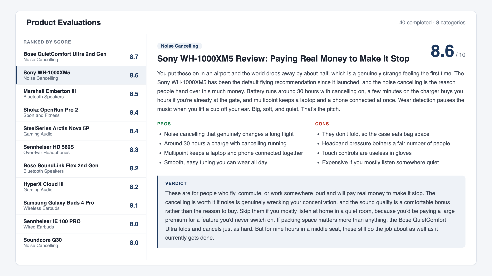
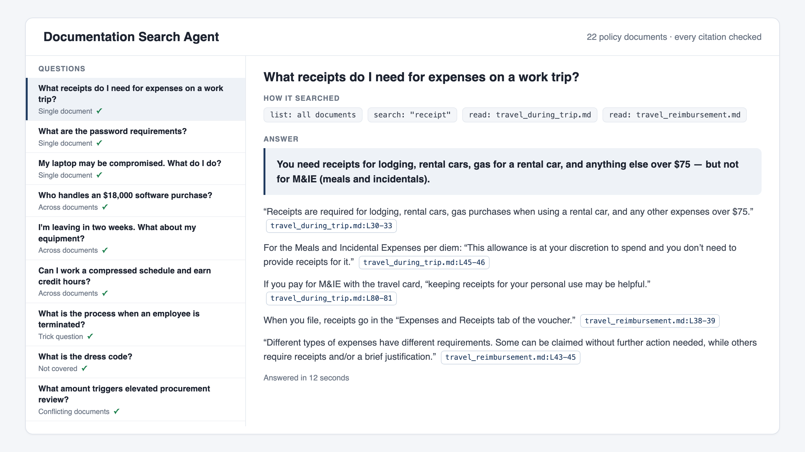

Selected projects
AI Evaluation & Scoring Agent

The problem
Reviewing a steady stream of new listings by hand took time, and it was hard to apply the same criteria to every one.
What I built
An AI agent that runs on a weekly schedule, pulls in new listings, and scores each one against a custom rubric I designed. For every recommendation, it writes a short rationale explaining why it scored the way it did.
How it works
- Ingests new external listings automatically each week
- Evaluates each listing against a custom scoring rubric
- Produces a ranked shortlist with a written rationale for every recommendation
Result
Manual review became a ranked, decision-ready shortlist delivered every week, with the reasoning visible so each recommendation can be checked.
Built with
Executive Analytics Dashboard

The problem
The CEO of a sports activation company had no single, current view of how the business was performing. Key metrics lived in different places and had to be pulled together manually.
What I built
A CEO-level dashboard, plus the underlying data structure and automated refresh process that keep it current without manual updates.
How it works
- Designed the data structure that consolidates key business metrics
- Set up an automated refresh so the data stays current
- Built the dashboard as a single view the CEO can check at any time
Result
One always-current view of business performance, with no manual pulls required.
Built with
AI Product Research & Evaluation Pipeline

The problem
Comparing products consistently takes a lot of research, and results vary depending on who does it and what they focus on.
What I built
A multi-step AI workflow that takes source links and a set of criteria, analyzes each product, and returns findings in a standardized format I designed. I refined the model's instructions over time so it focused on what mattered most.
How it works
- Takes in source links and custom evaluation criteria
- Analyzes each product against those criteria
- Returns findings in a consistent, structured format and files them automatically
Result
Completed 40 consumer electronics product evaluations with a consistent structure and far less manual effort.
Built with
AI Documentation Search Agent

The problem
Information spread across a growing collection of documents and notes is slow to search. Finding the right answer means opening files one by one or relying on memory.
What I built
An AI agent with repository search that lets me ask questions in plain language and get answers pulled directly from my own documentation.
How it works
- Indexes a collection of documents into a searchable repository
- Takes a plain-language question
- Finds the relevant material and returns an answer drawn from the source documents
Result
Answers in seconds instead of manual digging through files, from one place.
Built with